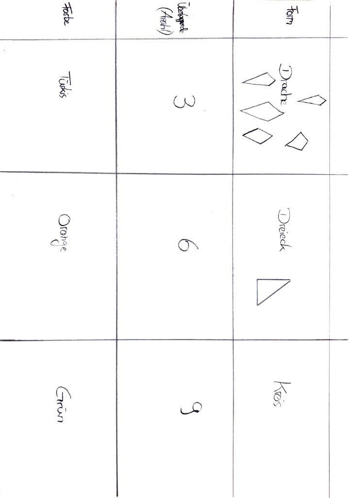
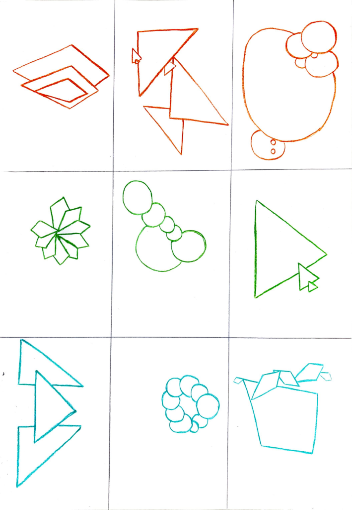
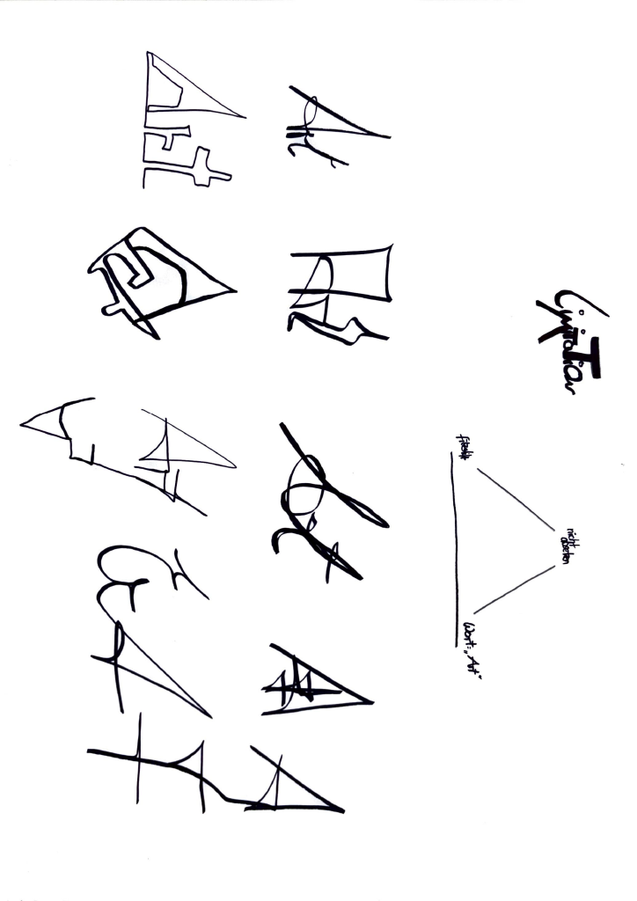

ARCHIVE ENTRY 1.2 — VARIABLES & PARAMETERS. This archive entry documents the exploration of parametric thinking within digital design processes developed during the Digital Foundations module. Variables and parameters form the basic structure of many computational systems and allow visual outcomes to change dynamically through defined inputs. In this exercise the relationship between numerical values and visual form was examined through a series of iterative experiments. By adjusting parameters such as size, position, spacing, and repetition, visual structures began to transform into a wide range of possible outcomes.
ARCHIVE ENTRY 1.2 — VARIABLES & PARAMETERS. Parametric thinking allows designers to construct flexible visual systems rather than fixed compositions. Instead of creating a single final image, the designer defines rules that control how elements behave. These rules can influence proportions, density, rhythm, and spatial distribution. Through controlled variation, complex patterns and visual structures emerge from relatively simple instructions.
ARCHIVE ENTRY 1.2 — VARIABLES & PARAMETERS. The exercise focused on understanding how variables influence visual logic. A change in a single parameter can alter the entire system. This approach reflects a shift from traditional design processes toward computational design methods where structures evolve through rule-based systems.
ARCHIVE ENTRY 1.2 — VARIABLES & PARAMETERS. The archive records experiments with adjustable grid structures, repeated shapes, and generative pattern systems. By modifying parameters in real time, new visual configurations emerged that would be difficult to achieve through manual drawing alone. These experiments demonstrate how algorithmic thinking expands the possibilities of visual design.
ARCHIVE ENTRY 1.2 — VARIABLES & PARAMETERS. Within the Digital Foundations module, parametric design is treated as both a technical and conceptual tool. It allows designers to explore the relationship between control and variation, structure and unpredictability. The resulting visual outputs represent not only individual compositions but also systems capable of producing multiple variations over time.
ARCHIVE ENTRY 1.2 — VARIABLES & PARAMETERS. The documentation within this archive therefore focuses not only on final visual results but also on the underlying logic that generated them. Each experiment contributes to an understanding of how digital systems can shape visual language through adjustable parameters and variable-driven processes.
ARCHIVE ENTRY 1.2 — VARIABLES & PARAMETERS. This archive entry documents the exploration of parametric thinking within digital design processes developed during the Digital Foundations module. Variables and parameters form the basic structure of many computational systems and allow visual outcomes to change dynamically through defined inputs. In this exercise the relationship between numerical values and visual form was examined through a series of iterative experiments. By adjusting parameters such as size, position, spacing, and repetition, visual structures began to transform into a wide range of possible outcomes.
ARCHIVE ENTRY 1.2 — VARIABLES & PARAMETERS. Parametric thinking allows designers to construct flexible visual systems rather than fixed compositions. Instead of creating a single final image, the designer defines rules that control how elements behave. These rules can influence proportions, density, rhythm, and spatial distribution. Through controlled variation, complex patterns and visual structures emerge from relatively simple instructions.
ARCHIVE ENTRY 1.2 — VARIABLES & PARAMETERS. The exercise focused on understanding how variables influence visual logic. A change in a single parameter can alter the entire system. This approach reflects a shift from traditional design processes toward computational design methods where structures evolve through rule-based systems.
ARCHIVE ENTRY 1.2 — VARIABLES & PARAMETERS. The archive records experiments with adjustable grid structures, repeated shapes, and generative pattern systems. By modifying parameters in real time, new visual configurations emerged that would be difficult to achieve through manual drawing alone. These experiments demonstrate how algorithmic thinking expands the possibilities of visual design.
ARCHIVE ENTRY 1.2 — VARIABLES & PARAMETERS. Within the Digital Foundations module, parametric design is treated as both a technical and conceptual tool. It allows designers to explore the relationship between control and variation, structure and unpredictability. The resulting visual outputs represent not only individual compositions but also systems capable of producing multiple variations over time.
ARCHIVE ENTRY 1.2 — VARIABLES & PARAMETERS. The documentation within this archive therefore focuses not only on final visual results but also on the underlying logic that generated them. Each experiment contributes to an understanding of how digital systems can shape visual language through adjustable parameters and variable-driven processes.
REDACTED
Screenshots



Exercise
Die Aufgaben bestanden darin, durch eigene Regeln
limitert zu arbeiten, was eine andere Herangehensweise erfordert.
Idea
Zunächst wurden sich Limitaionen in Form von Farben, Formen und Anzahl gesetzt.
Jeder Parameter hat drei verschiedene Werte. Nun sollten immer drei zufällige Werte eines jeden
Parameteres miteinander kombiniert werden, sodass jedes mal verschiedene Ergebnisse erzielt wurden.
Ähnlich funktionierte der Ansatz des "magic triangle", bei dem drei im vorhinein festgelegte Parameter miteinander kombiniert wurden, um verschiedene visuelle Ergebnisse zu erzielen.
Reflection
Die Aufgabe hat mir viel Spaß gemacht. Die Limitaionen sorgten für ein kreatives Umdenken und eine komplett
andere Herangehensweise an die Gestaltung. Zugleich stellte ich fest, dass durch festgelegte Regeln
die "Angst vor dem weißen Blatt" komplett verschwinden kann, da es Parameter gibt, an denen man sich orientiert kann.